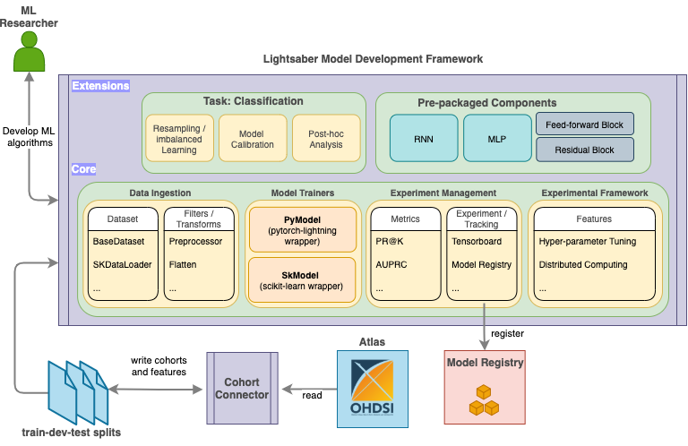

Introduction
What is Lightsaber
Lightsaber is an extensible training framework which provides blueprints for the development of disease progression models (DPM). It is designed ground up using state-of-the art open source tools to provide a simple, modular, and unified model training framework to support some of the common use cases for DPM.
Lightsaber contains four key modules that aim to promote reuse and standardization of DPM model training workflow as below:
- Data ingestion modules to support standardized methods of ingesting and transforming raw data (containing extracted features and target values).
- Model Trainers to support standardized training of DPM models by adopting the best practices as default
-
Experiment Management to ensure repeatable experimentation and standardized reporting via:
metricsto calculate DPM problem specific model evaluation, and- in-built Model tracking and support for post-hoc model evaluation.
-
Experimental Framework exposing user friendly state-of-the art tools for hyper-parameter tunings and distributed computing
Currently, Lightsaber supports classification (one or multi-class) use cases for DPM, including support for imbalanced learning problems that are common in DPM.
In addition, Lightsaber also comes pre-packaged with a set of state-of-the-art model implementations (such as RNN and MLP with sane defaults) and components (such as feed-forward block and residual blocks).
Lightsaber components are designed such that a user can be use these, either independently or all of these in the recommended manner (See Getting started guide), to train and define DPM models.
Lightsaber follows a batteries included approach such that the modeler can focus only on developing the logic of their model and let Lightsaber handle the rest.
More specifically, Lightsaber aims to augment, and not substitute, the modeler's current workflow and supports model definitions/workflows around:
scikit-learn[1] compliant models: for classical modelspytorch[2] compliant models: for general purpose models, including deep learning models.
To summarize, it is thus an opinionated take on how DPM model development should be conducted by providing with a unified core to abstract and standardize out the engineering, evaluation, model training, and model tracking to support: (a) reproducible research, (b) accelerate model development, and (c) standardize model deployment.
While Lightsaber would be automatically installed as part of DPM360, it can also be installed as a standalone python package - please see the standalone installation instructions
Why Use Lightsaber

Lightsaber provides a set of tools/framework that supports both data scientists and researchers for development of disease progression models. Combined with other components of DPM360, it aims to help such personas to rapidly prototype developed models as services,
Lightsaber supports both classical machine learning (scikit-learn compliant) and deep learning model (pytorch compliant) via a unified workflow. To understand, the importance of Lightsaber, readers are invited to focus on the steps involved during the development of DPM models for an imbalanced classification problem (such as predicting mortality among ICU patients).
Typically, once the data has been curated (via cohort definition and feature extraction), a data scientist would need to develop, test, and evaluate a set of DPM models. For that, they would need to develop and execute programs to perform:
- split data in appropriate folds, read the data, and perform pre-processing a repeatable and standard manner (e.g. across multiple splits and across multiple experiments)
- define the structure of the model, including definition of the architecture of neural networks for deep learning models, and specifying/defining the loss function
- training framework to train the model on the training data and use the validation data for optimization of the model
- apply techniques such as early stopping to prevent overfitting using the validation set
- tuning the model to find the optimal hyper-parameters and select the best performing model definition/hyper-parameter
- evaluating the model on the test data using different metrics
- saving and deploying the model for later use
In general, without Lightsaber, for each model and datasets, users have to then write their own custom training routines (more important for deep learning models as base pytorch is quite low-level for that), custom data processors to ingest data from extracted cohort (again more important for deep learning models), and inbuilt model tracking using Mlflow (this is valid for both scikit-learn and pytorch).
Furthermore, for every model type, custom metrics and evaluation routines have to be developed.
To address these issues, Lightsaber packages core utilities that supply workflows for model training, experiments management, dataset ingestion, hyper-parameter tuning, and ad-hoc distributed computing. In addition, for specific class of problems/tasks such as classification, Lightsaber standardizes and integrates evaluation - e.g. for a classification mode it tracks AUC-ROC, AUC-PROC, Recall@K, etc. Lightsaber also integrates recalling such evaluations for post-hoc report generation and/or model maintenance by providing routines to interact with Mlflow - the choice for model registry. Without Lightsaber all of these need to (a) be custom built and (b) be repeated for each model.
In essence, Lightsaber isolates all engineering parts of training and tracking the model [steps 1 and 3-7] from the core model development [step 2] so that a data scientist need to only focus on the architecture of the network as well as the loss function. All other steps are provided by the Lightsaber framework in a standardized way for training/optimizing/evaluating/deploying the model.
This modularization also enables the data scientist to plug and play third-party pre-packaged models (e.g. existing scikit-learn model or pytorch model files) in a similar manner towards rapid experimentation and prototyping.
For imbalanced classification problems, Lightsaber also provides additional built-in utilities such as calibration of model and training samplers to handle the imbalance in the data. Finally, Lightsaber also comes pre-packaged with state-of-the art models with good defaults as well as component blocks to develop custom deep-learning models for DPM.
Interested readers can read our detailed code examples for both classical machine learning and deep-learning models.
Lightsaber for Researchers
Lightsaber is built for both researchers and data-scientists and promotes model development/usage in a consistent manner for rapid prototyping. As such it also supports advanced usage via composable frameworks. For example, researchers can use the full power of pytorch-lightning to debug model training and write custom model callbacks. The separation of Lightsaber core and tasks also enables researchers to support more complicated use-cases such as multi-task survival and classification models by overloading the PyModel.
For a step-by-step description of the Lightsaber components, please consult the Getting started guide.
References
Some of the open source packages used by Lightsaber to provide the core functions are as follows:
- framework for hyper-parameter optimization - built on top of Ray [3]
- framework to train deep-learning model - built on top of Pytorch-lightning [4]
- connections to model registry for reproducibility and post-hoc analysis - built on top of Mlflow [5]
@article{scikit-learn,
title={Scikit-learn: Machine Learning in {P}ython},
author={Pedregosa, F. and Varoquaux, G. and Gramfort, A. and Michel, V.
and Thirion, B. and Grisel, O. and Blondel, M. and Prettenhofer, P.
and Weiss, R. and Dubourg, V. and Vanderplas, J. and Passos, A. and
Cournapeau, D. and Brucher, M. and Perrot, M. and Duchesnay, E.},
journal={Journal of Machine Learning Research},
volume={12},
pages={2825--2830},
year={2011}
}
@incollection{NEURIPS2019_9015,
title = {PyTorch: An Imperative Style, High-Performance Deep Learning Library},
author = {Paszke, Adam and Gross, Sam and Massa, Francisco and Lerer, Adam and Bradbury, James and Chanan, Gregory and Killeen, Trevor and Lin, Zeming and Gimelshein, Natalia and Antiga, Luca and Desmaison, Alban and Kopf, Andreas and Yang, Edward and DeVito, Zachary and Raison, Martin and Tejani, Alykhan and Chilamkurthy, Sasank and Steiner, Benoit and Fang, Lu and Bai, Junjie and Chintala, Soumith},
booktitle = {Advances in Neural Information Processing Systems 32},
editor = {H. Wallach and H. Larochelle and A. Beygelzimer and F. d\textquotesingle Alch\'{e}-Buc and E. Fox and R. Garnett},
pages = {8024--8035},
year = {2019},
publisher = {Curran Associates, Inc.},
url = {http://papers.neurips.cc/paper/9015-pytorch-an-imperative-style-high-performance-deep-learning-library.pdf}
}
@article{ray,
title={Tune: A Research Platform for Distributed Model Selection and Training},
author={Liaw, Richard and Liang, Eric and Nishihara, Robert
and Moritz, Philipp and Gonzalez, Joseph E and Stoica, Ion},
journal={arXiv preprint arXiv:1807.05118},
year={2018},
url={https://docs.ray.io/en/master/tune/index.html}
}
@article{pylight,
title={PyTorch Lightning},
author={Falcon, WA and .al},
journal={GitHub. Note: https://github.com/PyTorchLightning/pytorch-lightning},
volume={3},
year={2019}
}
@misc{3,
title={MLflow},
url={https://mlflow.org/},
}